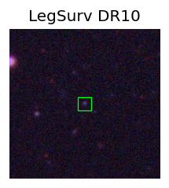

Candidate List 20261113Last night — ZTF: 24 passed basic cuts (1 young) · LSST: 2,874 passed basic cuts (240 young)Previous Day Next Day
Section 1: New Sources (age<1d) Section 2: Old (1-5d) sources observed last nightplaceholder
Section 1: New Afterglow/FBOT Cands Last Night (0)
Section 2: Older Sources Observed Last Night (9)
0. [LSST] 171172017886724245 (Afterglow?) [Back to Top] [Fritz Alert] [Fritz Source] [Lasair]RA, Dec: 62.34915, -47.50095 4h 9m23.80s, -47d-30m-3.43sGalactic (l, b): 254.53477, -46.61536 ext(g-r) = 0.014


TESS: Sectors [ 3 5 30 97]
PS1: 0 sources in 3 arcsec
LegacySurvey: 1 sources in 3 arcsec Closest: d = 0.26 arcsec, 186.8 deg (east of north) photoz=0.45 (68% bounds 0.42, 0.49), type=REX peak abs mag (ext. corrected) = -19.49 (68% bounds -19.32, -19.71)

Extinction-corrected gi color:
From alerts: 0.8 +/- 0.13 mag
Consistent with synchrotron, g-r>0!
Rise Rate:
g: 0.22 mag/day
r: 0.31 mag/day
i: 0.18 mag/day
Fade Rate:
r: 49.76 mag/day
1. [LSST] 171180824436146227 (Afterglow?) (TNS: AT 2026aisb) [Back to Top] [Fritz Alert] [Fritz Source] [Lasair]RA, Dec: 58.5606, -49.96264 3h54m14.54s, -49d-57m-45.49sGalactic (l, b): 258.91831, -48.50035 ext(g-r) = 0.01


TESS: Sectors [ 3 4 30 31 97]
PS1: 0 sources in 3 arcsec
LegacySurvey: 1 sources in 3 arcsec Closest: d = 2.18 arcsec, 219.3 deg (east of north) photoz=0.41 (68% bounds 0.34, 0.48), type=SER peak abs mag (ext. corrected) = -19.24 (68% bounds -18.7, -19.62)

Extinction-corrected gi color:
From alerts: -0.99 +/- 99 mag
Rise Rate:
g: 0.1 mag/day
Fade Rate:
i: 0.21 mag/day
2. [LSST] 171185213438165000 (Afterglow?) [Back to Top] [Fritz Alert] [Fritz Source] [Lasair]RA, Dec: 51.79288, -26.70332 3h27m10.29s, -26d-42m-11.96sGalactic (l, b): 221.34854, -55.42357 ext(g-r) = 0.012


TESS: Sectors [ 4 31 105 106 107 108]
PS1: 0 sources in 3 arcsec
LegacySurvey: 1 sources in 3 arcsec Closest: d = 9.18 arcsec, 212.1 deg (east of north) photoz=1.07 (68% bounds 0.6, 1.75), type=REX peak abs mag (ext. corrected) = -21.45 (68% bounds -19.89, -22.76)

Extinction-corrected ri color:
From alerts: 0.02 +/- 0.14 mag
Consistent with synchrotron, g-r>0!
Rise Rate:
r: 6.02 mag/day
i: 0.37 mag/day
Fade Rate:
r: 0.34 mag/day
i: 0.28 mag/day
3. [LSST] 170068070160138354 (Afterglow?) [Back to Top] [Fritz Alert] [Fritz Source] [Lasair]RA, Dec: 54.91319, -27.4023 3h39m39.16s, -27d-24m-8.29sGalactic (l, b): 223.32028, -52.80134 ext(g-r) = 0.015


TESS: Sectors [ 4 31 105 106 107 108]
PS1: 0 sources in 3 arcsec
LegacySurvey: 1 sources in 3 arcsec Closest: d = 0.10 arcsec, 338.6 deg (east of north) photoz=0.42 (68% bounds 0.32, 0.52), type=SER peak abs mag (ext. corrected) = -19.45 (68% bounds -18.82, -20.03)

Rise Rate:
Fade Rate:
r: 0.43 mag/day
4. [LSST] 170591538064654353 (Afterglow?) [Back to Top] [Fritz Alert] [Fritz Source] [Lasair]RA, Dec: 350.90089, -10.05791 23h23m36.21s, -10d-3m-28.48sGalactic (l, b): 68.2611, -63.17292 ext(g-r) = 0.031

TESS: Sectors [42 70 92]
PS1: 0 sources in 3 arcsec
LegacySurvey: 1 sources in 3 arcsec Closest: d = 0.15 arcsec, 83.2 deg (east of north) photoz=1.05 (68% bounds 0.84, 1.37), type=PSF peak abs mag (ext. corrected) = -21.17 (68% bounds -20.56, -21.87)

Rise Rate:
Fade Rate:
i: 0.22 mag/day
5. [LSST] 171198363420590134 (Afterglow?) [Back to Top] [Fritz Alert] [Fritz Source] [Lasair]RA, Dec: 349.28161, -9.67155 23h17m7.59s, -9d-40m-17.58sGalactic (l, b): 66.58032, -61.72708 WARNING: -4.66 deg from ecliptic plane ext(g-r) = 0.036

TESS: Sectors [42 70 92]
SDSS (<15 kpc):Found SDSS phot-z: z=0.52; peak abs mag = -19.82
PS1: 0 sources in 3 arcsec
LegacySurvey: 1 sources in 3 arcsec Closest: d = 0.46 arcsec, 293.9 deg (east of north) photoz=0.6 (68% bounds 0.58, 0.63), type=DEV peak abs mag (ext. corrected) = -20.21 (68% bounds -20.09, -20.33)

Rise Rate:
Fade Rate:
i: 0.35 mag/day
6. [LSST] 171198363654946855 (Afterglow?) [Back to Top] [Fritz Alert] [Fritz Source] [Lasair]RA, Dec: 349.09433, -11.72521 23h16m22.64s, -11d-43m-30.76sGalactic (l, b): 62.9252, -62.89707 ext(g-r) = 0.036


TESS: Sectors [ 2 29 42 70 92]
NED photo-z only: WISEA J231622.60-114335.4 (G, 4.7″) z=0.1061 [zflag PUN] — not used for peak abs mag
PS1: 0 sources in 3 arcsec
LegacySurvey: 1 sources in 3 arcsec Closest: d = 0.87 arcsec, 209.2 deg (east of north) photoz=0.11 (68% bounds 0.09, 0.14), type=SER peak abs mag (ext. corrected) = -16.54 (68% bounds -16.21, -17.04)

Extinction-corrected iz color:
From alerts: 0.31 +/- 0.11 mag
Consistent with synchrotron, g-r>0!
Rise Rate:
Fade Rate:
i: 0.26 mag/day
7. [LSST] 171198365673455712 (Afterglow?) [Back to Top] [Fritz Alert] [Fritz Source] [Lasair]RA, Dec: 351.5458, -10.62024 23h26m10.99s, -10d-37m-12.86sGalactic (l, b): 68.29075, -64.02059 ext(g-r) = 0.036


TESS: Sectors [ 2 29 42 70 92]
SDSS (<15 kpc):Found SDSS phot-z: z=0.35; peak abs mag = -18.76
PS1: 0 sources in 3 arcsec
LegacySurvey: 1 sources in 3 arcsec Closest: d = 0.11 arcsec, 126.3 deg (east of north) photoz=0.24 (68% bounds 0.18, 0.32), type=DEV peak abs mag (ext. corrected) = -17.84 (68% bounds -17.1, -18.6)

Rise Rate:
Fade Rate:
i: 0.28 mag/day
8. [LSST] 171198366100750420 (FBOT?) [Back to Top] [Fritz Alert] [Fritz Source] [Lasair]RA, Dec: 352.99913, -10.25516 23h31m59.79s, -10d-15m-18.57sGalactic (l, b): 71.18443, -64.80473 ext(g-r) = 0.025


TESS: Sectors [ 2 29 42 92]
PS1: 0 sources in 3 arcsec
LegacySurvey: 1 sources in 3 arcsec Closest: d = 0.11 arcsec, 26.7 deg (east of north) photoz=0.55 (68% bounds 0.35, 0.77), type=REX peak abs mag (ext. corrected) = -20.11 (68% bounds -18.95, -21.0)

Rise Rate:
i: 0.29 mag/day
Fade Rate: